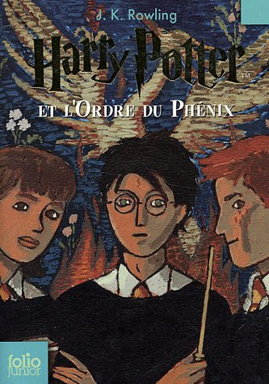

Regarder High Fidelity (la série adaptée l’année dernière du roman de Nick Hornby), m’a donné envie, outre d’écouter plein de musique, de faire une liste : une liste de livres qui ont occupé une place spéciale à un moment de ma petite existence et qui comptent donc encore d’une façon ou d’une autre. C’est évidemment complètement arbitraire, mais l’exercice de mémoire est amusant. Alors, selon l’expression consacrée, c’est parti pour le top 5 des livres qui ont compté un jour dans ma vie.
Haute Fidélité - Nick Hornby (1995)
J’ai 19 ans, aucune confiance en moi et je joue dans ce groupe de rock avec mes amis. Un jour on obtient ce plan impensable : on va enregistrer dans un studio. Juste avant de partir enregistrer à Liège - dans un studio ! -, je reçois ce petit bouquin coloré avec un vinyle sur la couverture : “ça devrait te plaire”. Un coup dans le mille, effectivement. A l’époque je vis aussi ma première vraie relation amoureuse, et c’est peu dire que ce roman qui cause de musique, d’amour et de lose, est tombé au bon moment. Usé comme il est, je l’ai probablement lu et relu plusieurs fois.
Harry Potter et l’Ordre du Phénix - J.K. Rowling (2003)
Facile, mais c’est comme ça. En décembre 2003, j’avais 14 ans, j’avais découvert Harry Potter trois ans auparavant et j’attendais cette suite avec ferveur. Ca n’avait pas vraiment été une année fun, et c’est peu de dire que ce bouquin fut une respiration plus que bienvenue. Outre le plaisir de se replonger dans cet univers-doudou propice à l’imagination et dans lequel on se sent bien, je me souviens en particulier de quelques passages jubilatoires et de l’introduction de nouveaux personnages étonnants. Il y a des livres comme ça qui vous tirent du cafard au moins pour un moment, et ça ne s’oublie pas.

Gonzo Highway - Hunter S. Thompson (2005)
C’est un ami qui m’a prêté ce bouquin, accompagné de conseils appuyés. J’étais fasciné par le journalisme et étudiant - pas du tout en journalisme. Après quelques pages, j’ai cru avoir pris une espèce de baffe stylistique dans la figure (“ah bon ? On peut écrire comme ça ?”), accompagnée d’un immense sentiment de liberté. Ce type, Hunter S. Thompson, écrivait de longues lettres d’insultes à des gens importants et ça me faisait kiffer. Elles m’ont galvanisé, dirons-nous. J’ai développé une fascination pour ce personnage sans compromis et pendant quelques temps n’ai plus juré que par le journalisme gonzo et l’ultra-subjectivité. J’en suis revenu, mais il est difficile d’oublier combien ces écrits m’ont fait me sentir vivant.
Au milieu de la galaxie, tournez à gauche - Robin Klein (1999)
Ce livre pour enfants est sans doute un de mes premiers contacts avec les romans, et par la même occasion avec la science-fiction. Nous y suivons Zed, aînée des enfants et “grande organisatrice” d’une famille d’extra-terrestres obligée de vivre incognito sur Terre, au milieu d’humains différents à bien des niveaux. La famille n’en faisant qu’à sa tête, Zed, qui n’est jamais qu’une jeune ado, a bien du mal à assumer sa lourde responsabilité. Parmi les livres pour enfants que je lisais à l’époque, c’est vraiment celui-ci qui surnage et pour lequel je garde la plus grande tendresse.
La conquête du monde - Sibylle Grimbert (2012)
J’ai un attachement particulier pour ce roman, lu il n’y a finalement pas si longtemps (l’été 2013, bon, c’était hier), à peu près au moment de tourner la page d’une année erratique. Je me souviens d’un sentiment de jubilation presque coupable, celui d’observer un protagoniste insupportable à qui tout sourit perdre progressivement, d’abord de sa superbe, puis à peu près tout le reste dans un processus absurde et pourtant irrémédiable. Cathartique peut-être ? C’est un peu comme si je lui avais laissé temporairement mes propres soucis, le temps de passer à autre chose. En tout cas, là encore, c’est l’histoire d’un livre tombé au bon moment entre mes mains.